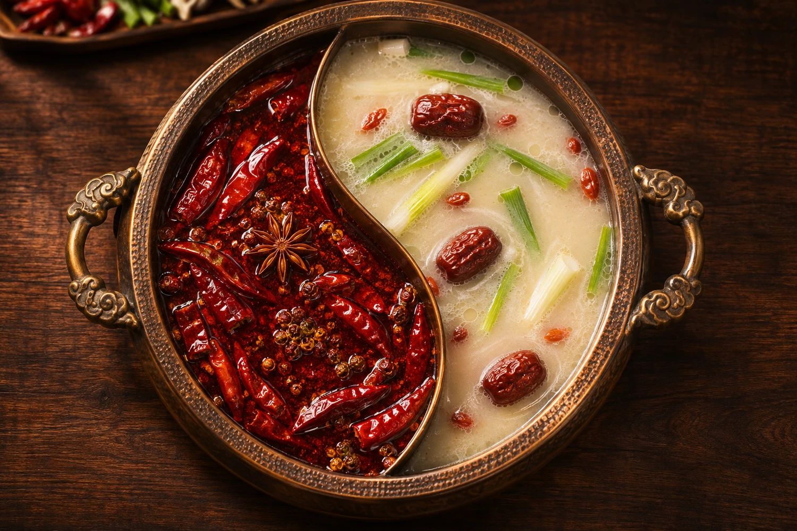
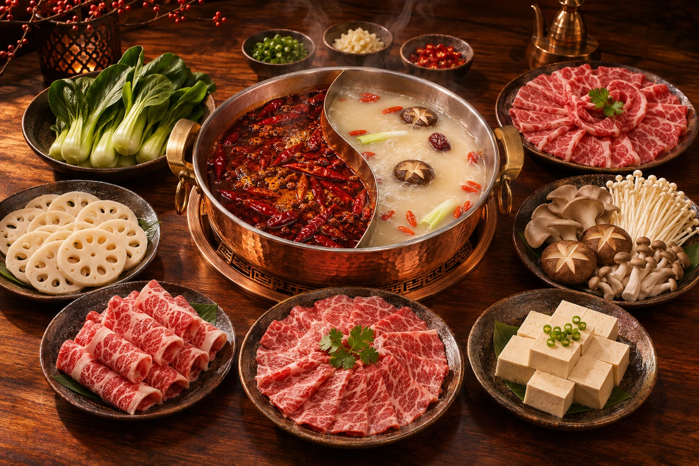
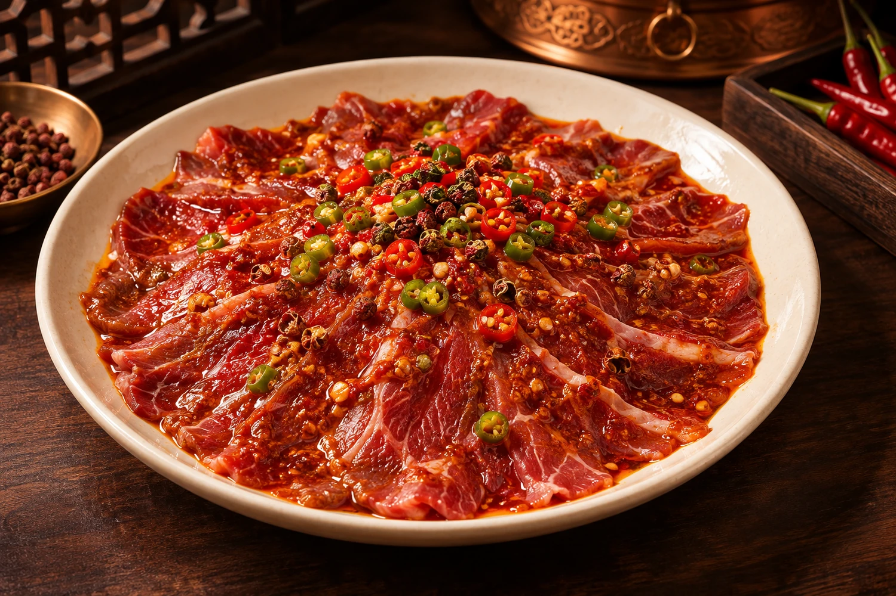
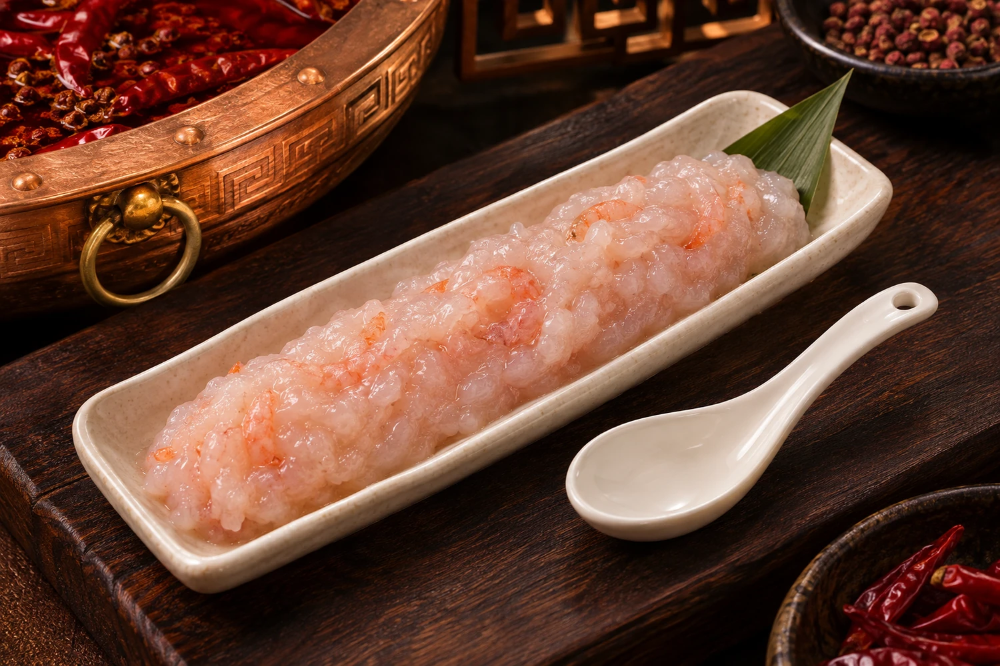
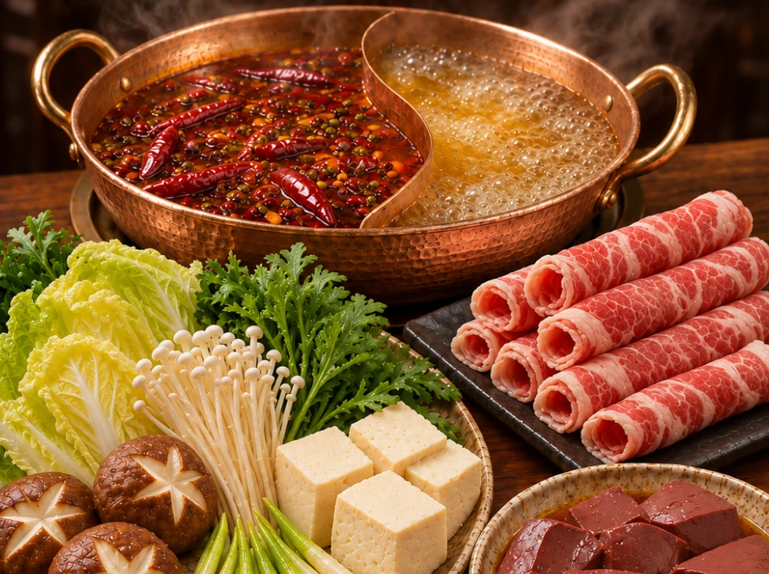
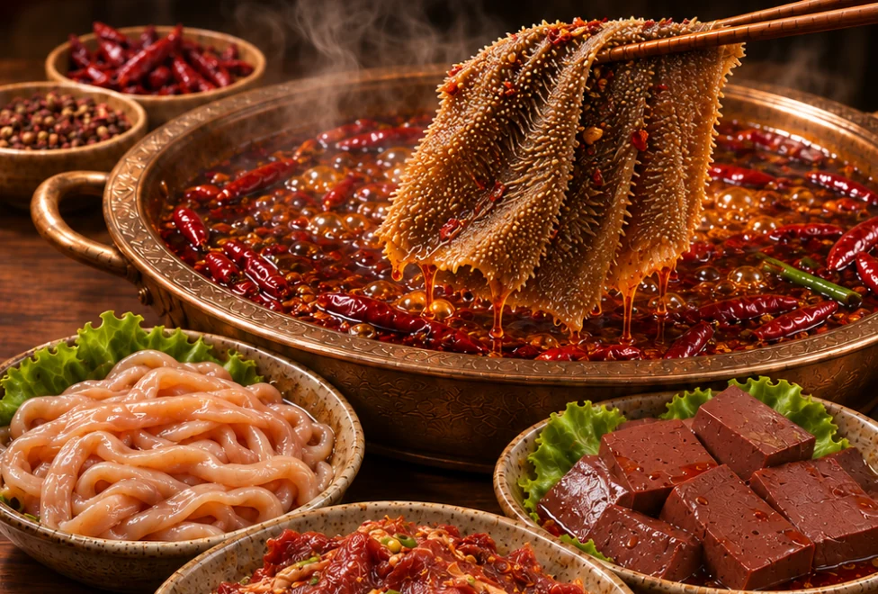
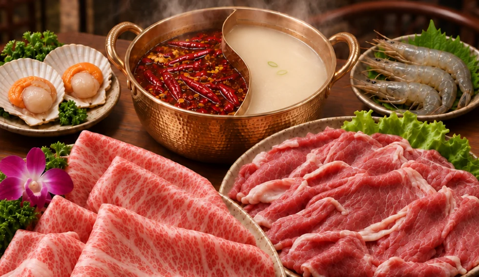

樓上について
写真はイメージです
樓上について
ひとつの鍋を、
みんなで囲む。
鍋が煮立つと、花椒の香りがふわりと立ちのぼる。牛脂のコクに唐辛子の辛みが重なる、重慶ならではの火鍋です。樓上では、その土地で親しまれる味を、東京の食卓でお楽しみいただけます。
二つのスープを味わう鴛鴦鍋。小さな区画ごとに具材を煮る九宮格。秘伝牛肉や牛センマイ、エビつみれを選んで鍋を囲めば、ひと口ごとに違う香りと食感が広がります。
「次は、何を入れよう」。そんなひと言から会話が弾むのも、火鍋の楽しさ。親しい人と鍋を囲み、それぞれの好みを見つけながら、ゆっくりとお召し上がりください。

火鍋の楽しみ方
スープを選ぶ
しびれる辛さを楽しむなら牛油麻辣。鴛鴦鍋なら、麻辣ときのこやトマトなど、二つのスープを食べ比べられます。
好みの具材を合わせる
薄切りの牛肉やラム肉に、野菜やきのこを。コリコリとした牛センマイや、弾力のあるエビつみれも火鍋によく合います。
つけだれと、締めの一品
お好みのつけだれで味を変えながら、最後は麺やご飯で。スープを含んだ麺も、火鍋の楽しみのひとつです。
お品書きから
樓上の名物
二色のスープを囲み、好みの具材を一皿ずつ。
火鍋のあとは、冷たい甘味でひと休み。


火鍋の選び方
初めての方へ
お好きな味わいから、スープと具材の組み合わせを見つけてみませんか。
スープや具材の取り扱いは店舗にご確認ください。
コースのご案内
火鍋食べ放題
3つのコースの品数と内容を比較できます。
コースを選ぶと、詳しい内容をご覧いただけます。
お手軽68品
3,680円税込
肉・野菜・豆腐などの定番具材
スタンダード88品
4,680円税込
牛センマイ・鴨の腸などの重慶名物
プレミアム108品
5,980円税込
A5ランク和牛・手切りラム肉






ご利用時間120分制（ラストオーダー90分）
飲み放題＋1,580円（税込）
食べ放題の実施店舗とご利用条件は、ご予約時に各店舗へご確認ください。

東京の4店舗
店舗案内・電話予約
ご希望の店舗にお電話ください。
ご来店日時と人数をお伝えいただくとスムーズです。
小岩店
JR小岩駅から徒歩約3分
東京都江戸川区西小岩1-27-6YOSHIBLD 1F
12:00〜23:00
上野店
上野広小路駅から徒歩約1分
東京都台東区上野4-4-5c-road Bldg 5F
11:30〜23:00（ラストオーダー22:20）
池袋店
池袋駅西口（北）から徒歩約1分
東京都豊島区西池袋1-28-1第二西池ビル 4F
11:30〜23:00（ラストオーダー22:20）
6〜8名様用の個室についてはお電話でご相談ください。
高田馬場店
JR高田馬場駅 早稲田口から徒歩約1分
東京都新宿区高田馬場4-7-53F
営業時間は店舗へお問い合わせください。
営業時間は変更となる場合があります。ご来店前に店舗へご確認ください。